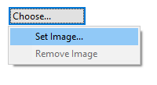
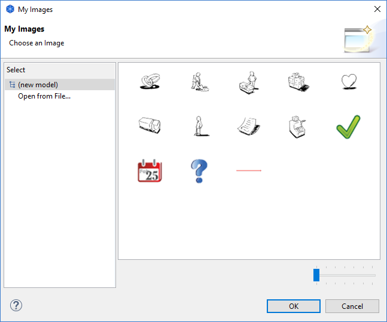

ArchiMate 对象、备注、组、画布块、图像对象和置顶可以包含图像。当图像位置未设置为“填充”时 ，块和粘滞中的图像将调整为 100像素的最大宽度和高度。图像可以是任何大小 ，但我们建议您将它们保持在合理的小尺寸 ，以免消耗太多内存。
要向其中一个对象添加图像，请打开“属性”窗口并选择对象。双击对象还将打开“属性”窗口。在“属性”窗口中找到“图像”选项卡，然后使用“图像选择...”按钮选择“图像选择器” ：

从“属性”窗口中选择图像选择器
注意-要为 ArchiMate对象设置图像 ，您必须首先确保在图像源下拉列表中选择了 “自定义”。
这将打开“我的图像”图像选择器对话框窗口：

“图像选择器”对话框窗口
任何已加载模型中包含的所有图像都将显示在选择器中，以便您可以重复使用它们。如果要从计算机打开图像文件，请选择“从文件打开...”选项。
 在画布视图中，您可以将图像文件从桌面拖放到画布。
在画布视图中，您可以将图像文件从桌面拖放到画布。
支持的图像格式有PNG、 JPG、 JPEG、 GIF、 TIF、 TIFF、 BMP和 ICO。
要从对象中删除图像，请从图像选择器中选择“删除图像”选项。
 添加图像时Archi对 “* .archimate”文件使用不同的文件格式。
添加图像时Archi对 “* .archimate”文件使用不同的文件格式。
通常， Archi会将 “* .archimate”文件保存为单纯文本 XML格式文件。但是 ，当使用图像时 ，使用的文件格式是包含模型的 XML文件和图像文件的二进制存档文件 （ ZIP格式 ）。这是为了将所有相关文件放在一起。